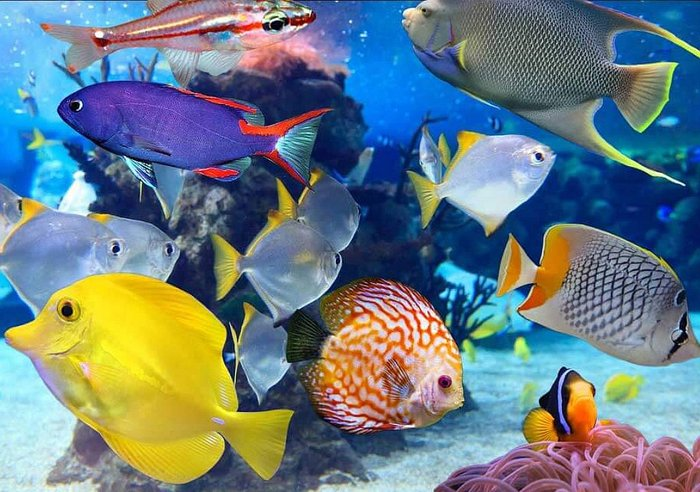

Peces, mascotas silenciosas
El pez es una de las mascotas más agradecidas, silenciosas y decorativas del reino animal. Existen multitud de especies con muchos colores que alegran nuestra casa. Sin embargo, estos pequeños animales acuáticos necesitan una serie de cuidados: temperatura del agua, controlar la concentración (ph), y la alimentación que debemos conocer a fondo.
La mayoría de los peces de pecera que se comercializan descienden en origen de carpas de río. Pertenecientes a la familia de los ciprínidos, tienen un nombre científico común que es Carasius auratus. Fueron desarrollados fundamentalmente en China y Japón a base de cruces y distintas mutaciones. Se han conseguido animales muy diversos, con colores variados (rojo, blanco, cobrizo, chocolate, azules, marmóreos, negros, con colores uniformes o a manchas combinando cualquiera de los anteriores).
Muchas de las especies hoy existentes son compatibles entre sí y pueden mezclarse en un mismo territorio, aunque también es cierto que las más espectaculares y bellas son ejemplares más caros y delicados y no debemos recomendarlos para una pecera pequeña sino únicamente para acuarios bien montados.